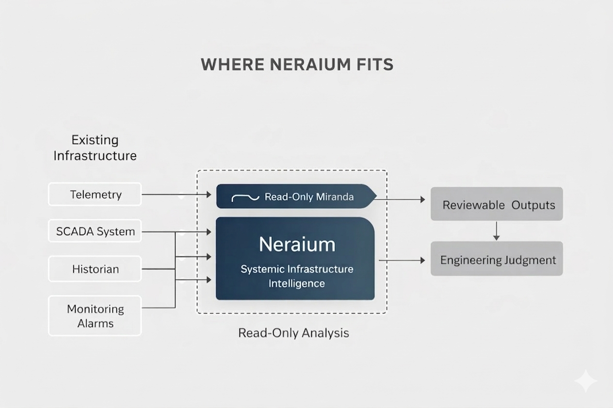
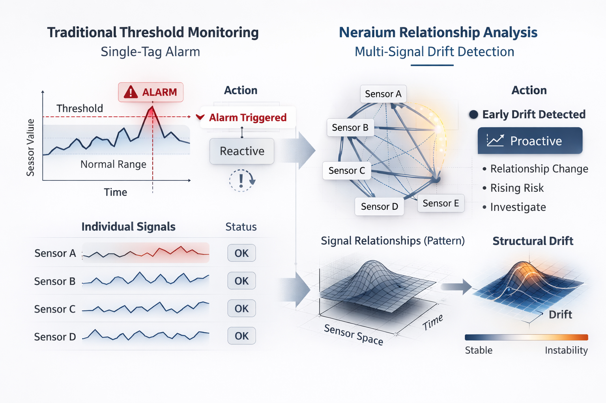

Systemic Infrastructure Intelligence for water systems.
Neraium learns each system's operating fingerprint, compares current behavior against historical patterns, and explains what changed, what it means, and where investigation should begin.
From existing data to operational understanding
Start with the operational sources your team already has, including exported datasets, historical logs, historians, SCADA, BAS, or read-only integrations.
Understand how operational signals behave together over time instead of judging each reading independently.
Identify changes in overall system behavior, even when individual readings still appear normal.
Explain what changed, why it matters, how the system is behaving, and where investigation should begin.
A system explanation your team can investigate
Neraium is designed to explain what the data means, not simply produce another score. It gives operators and engineers supporting observations and suggested investigation priorities while leaving decisions with the people responsible for the system.
Pump and filtration behavior has changed from the historical operating pattern. Flow response has weakened while pressure has increased.
This may indicate filter loading, reduced circulation, valve restriction, sensor drift, or changing system demand.
Verify flow measurements, inspect filter condition, review valve position, and compare current operation with recent maintenance activity.
Works beside the tools you already use
Neraium is a non-intrusive, read-only analysis platform. It does not control equipment, modify controller settings, automate chemical feeds, or issue commands to operational systems. Existing control systems remain fully responsible for operating the facility.

One reading can look normal while the system is changing
Threshold alerts are useful, but they usually watch one value at a time. SII analyzes how pressure, flow, chemistry, water level, and equipment behavior normally influence one another so Neraium can recognize changes in overall system behavior before they become larger operational problems.

Evaluate one water system with your existing data.